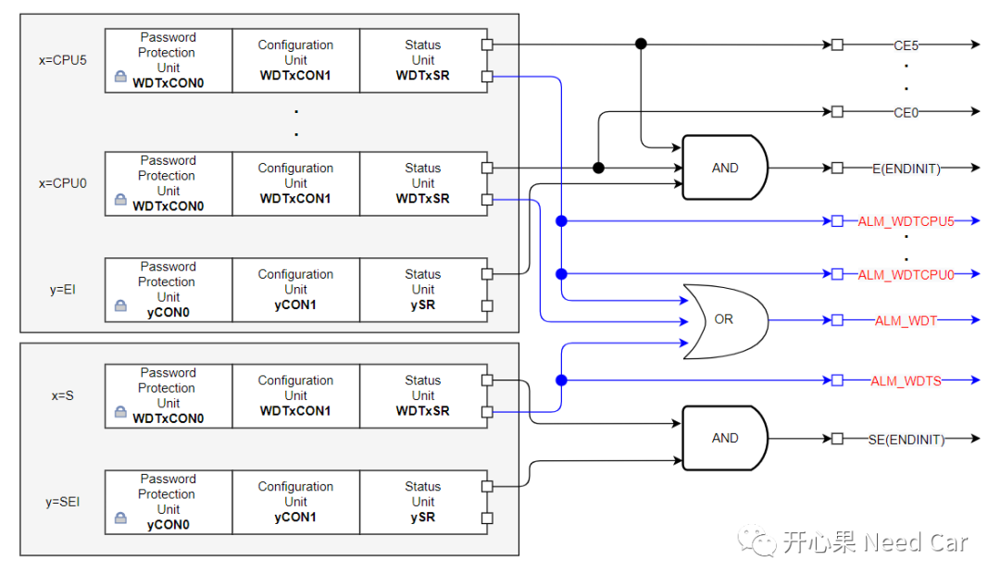
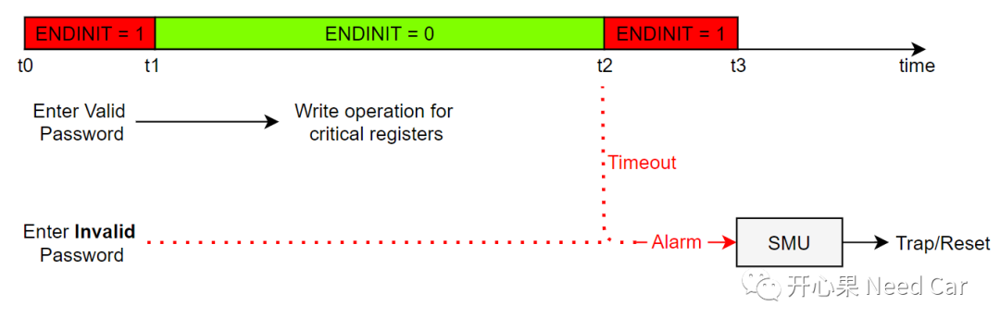
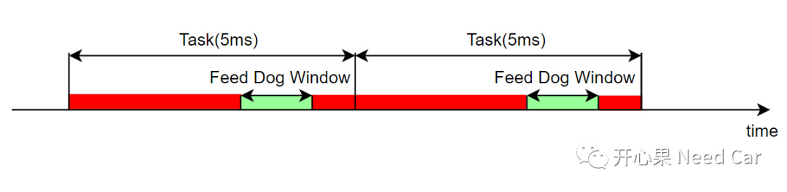
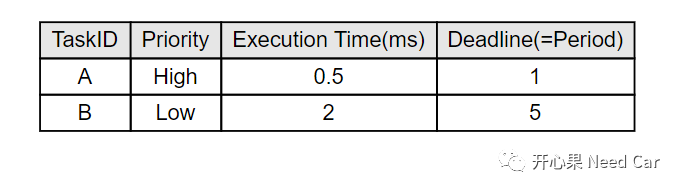
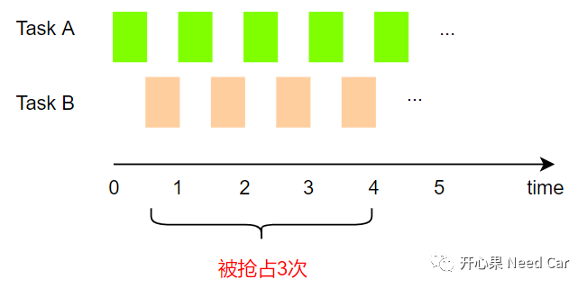
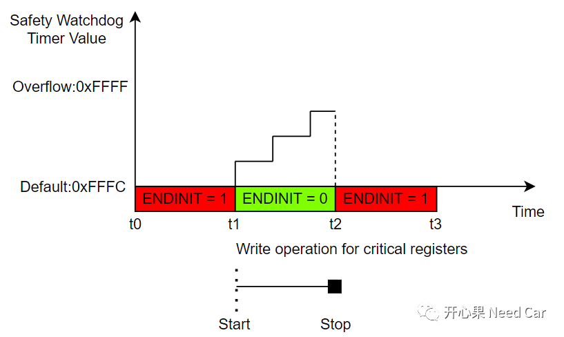
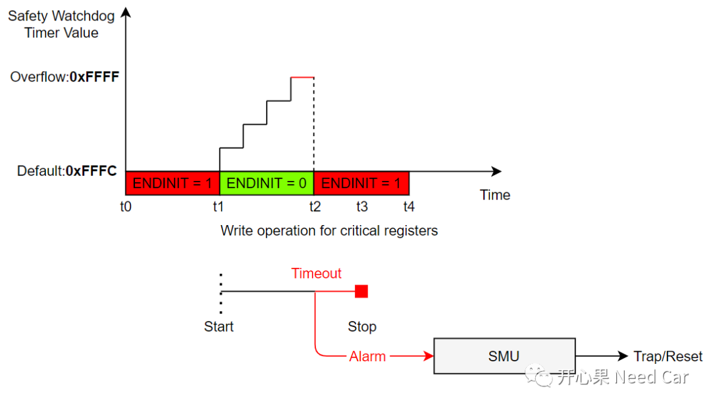
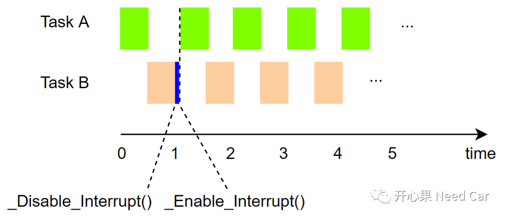
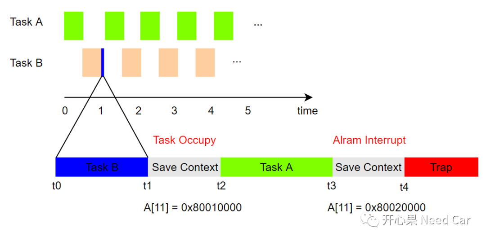

开心果 Need Car · 2022-06-03T15:04:00+08:00 · 微信原文
WatchDog大家并不陌生，它的存在，可以确保程序运行的稳定性。WatchDog用好了，可以提升软件的鲁棒性；用不好，可能会带来非预期的程序运行结果。本文分享一个WatchDog引发的问题。
提示：基于英飞凌tx397讨论
tx397一共有6个核，每个核一个WatchDog，外加一个系统级的Safety WatchDog，如下所示：

WatchDog可以干啥呢？一般来说，WatchDog主要有两个功能：
关键寄存器的写访问保护；
关键任务、代码执行时序超时监控。
1、关键寄存器写保护
为了提高程序的安全等级，防止关键寄存器的非法篡改，会对一些关键寄存器的写访问操作进行限制，即：Endinit功能。什么意思呢？就是对关键寄存器进行写操作的时候，需要输入有效的Password，先将SEICON0.ENDINIT复位( = 0)，才能对关键寄存器进行写操作，写操作完成后，重新将SEICON0.ENDINIT置位( = 1)。
如果写入的Password无效，或者在规定时间内没有重新将SEICON0.ENDINIT置位，则产生Alarm，通知SMU(Safety Management Unit)，程序进入Trap/Reset。如下所示：

2、任务监控

任务抢占，导致某些任务延时执行（5ms的任务可能需要5.2ms才能执行完）；
任务中存在死循环，比如：while(1)；
任务中存在阻塞行为，比如：事件A的执行一直等待事件B的结果。
程序执行过程中，存在偶发的Reset现象。如果CPU的负载率提高，则Reset概率提高。实际工程中，有1ms任务执行。
在Task B中会执行关键寄存器的写操作，Task A任务的周期为1ms，执行时间0.5ms，优先高，可以抢占Task B。Task A和Task B的属性如下所示：


本文问题操作的关键寄存器是MTU(Memory Test Unit)寄存器。
关键寄存器写操作时间计算
以Safety WatchDog为例，Safety WatchDog Timer的默认初始值为(uint16)0xFFFC，当SEICON0.ENDINIT = 0时，该计数器自动向上累加（硬件行为），累加溢出（超过0xFFFF）时，产生Alarm，告知SMU，进而程序进Trap/Reset。
如果写关键寄存器的操作可以在计数器溢出之前完成，则程序不会进Trap/Reset，如下所示：


那么，写关键寄存器需要花费多长时间呢？假设：WatchDog模块获取的主频为100MHz，分频值为16384，则计数器从0xFFFC累加到0xFFFF需要的时间为：655.36um。计算如下：
1/16384/100000000≈0.00016384s， 0.00016384s*(0xFFFF - 0xFFFC) ≈ 0.00065536s = 655.36um。
所以，写关键寄存器必须在655.36um时间内完成。在写的过程中，如果没有临界区的保护，写关键寄存器操作被打断，可能会导致WatchDog计数器溢出（＞655.36um没有重新置位ENDINIT Bit），程序进Trap/Reset。
因为写关键寄存器时，没有临界区保护导致程序异常，解决措施也就清晰的多，即：写关键寄存器的时候，增加临界区的保护(开/关中断)操作，如下所示：

思考1：WatchDog分为内狗和外狗，内狗就是本文提到的Safety WatchDog和CPU WatchDog，在uC内部。而外狗是独立的外设芯片，外狗的计数器在外狗芯片中，即使调试器连接目标板挂起（停在断点位置），不喂外狗，超时依然会复位。而内狗的计数器不同于外狗，默认情况下，内狗会因调试器挂起（断点）而停止计时，不会复位。所以，在工程开发阶段，外狗可以先屏蔽掉，避免调试过程中的复位。
思考2：项目中，不同的ECU，要求的安全等级可能不同，比如：有的OS可能需要Scalability Class 4（支持Timing Protection）。如果需要Timing Protection，如文中所述：使用内狗，也可以监控某个任务的执行情况。当然，Timing Protection功能的实现还可以使用GTM、STM等方式。
思考3：本文提到的这种Trap属于异步行为，这样的bug在定位入口点时不准，不能完全信任A[11]寄存器存储的返回地址(Return Address)。怎么理解呢？如下所示：

往期精彩回顾